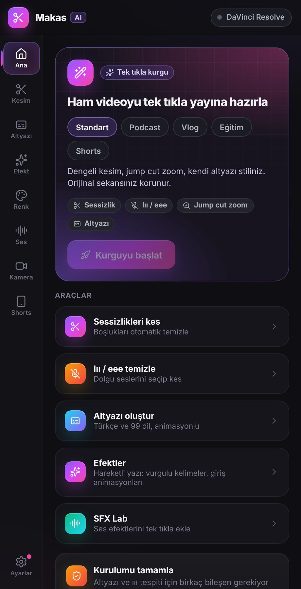
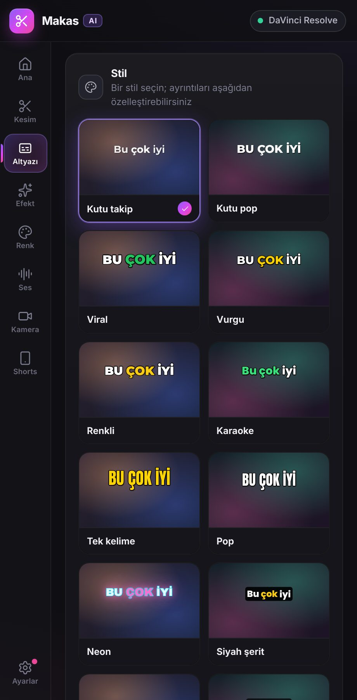
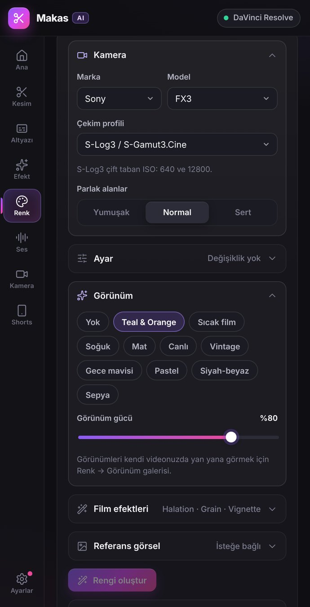
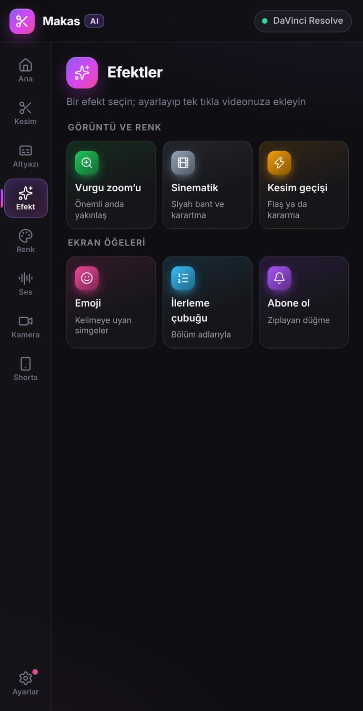

0cuts
0sremoved
0snew length
0%shorter
01 · SILENCE CUT
Find every pause. Cut them all at once.
Makas listens to the audio, marks everything under your threshold and closes the gaps. Your original sequence stays untouched.
Makas AI lives inside your editor. It cuts the silence, writes the captions and grades the shot. You keep the story.
Everything below is live. Move the sliders, change the styles, drag the line. The real thing does this on your timeline.
Makas listens to the audio, marks everything under your threshold and closes the gaps. Your original sequence stays untouched.
Speech is transcribed on your own computer, in 99 languages, then animated word by word. No upload, no per-minute fee.
Browser preview. The plugin uses each camera’s real log curve and color gamut.
Pick the camera you shot on. Makas converts log to Rec.709, balances the shot and adds a look. Drag the line to compare.
Type a name, pick a style and a color, add your logo. Makas renders it as a clean overlay on its own track.
No new app to learn and nothing to export. Makas opens next to your timeline and works on the sequence you already have.




Whooshes, hits and risers. Preview a sound, then drop it at the playhead.
Switches to whoever is speaking, across all your angles.
Finds the best moments and reframes them to 9:16.
Cuts your clips to the rhythm of a track.
Matches your footage to the words being said.
Levels and cleans voice tracks so dialogue sits right.
New tools and fixes arrive inside the panel. No reinstalling.
Cutting, transcription and color all run locally. Client work under NDA stays under NDA.
Speech-to-text and analysis run on your machine. Nothing is uploaded.
Caption ten minutes or ten hours. The price is the same.
After you sign in, Makas keeps working for up to 14 days without a connection.
Sign up with your email and a password. Your 7-day trial starts right away.
Download Makas for macOS or Windows. It shows up as a panel in Premiere Pro and DaVinci Resolve.
Open the panel, sign in with the same email and password, and press the button.
Secure checkout. Cancel anytime from your account page. 14-day money-back guarantee
Adobe Premiere Pro and DaVinci Resolve Studio, on macOS and Windows. Makas opens as a panel inside the editor, so there is no separate app to learn.
No. Cutting, transcription and captions run locally on your machine. Only the SFX library and updates use the internet.
Create an account and you get 7 days with every feature unlocked. No card needed to start. Subscribe when you are ready.
One account works on 2 devices. You can remove a device from your account page at any time and sign in on another.
Only to sign in and to refresh your license. After that Makas keeps working offline for up to 14 days.
It is a live preview of what Makas does, simplified for the browser. The real panel runs on your actual footage, inside your editor.
Yes. Manage or cancel your subscription from your account page; you keep access until the end of the period you paid for.